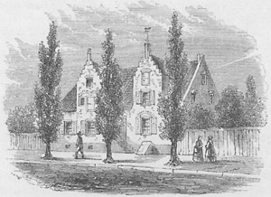

|
This stately building was located on the western side of North Pearl Street just north of the Elm Tree Corner.  A double gable-faced and connected ediface, this elegant looking residence was a unique community landmark.
This legendary structure is believed to have been built about 1725 by Johannes J. Beekman. Following his death in 1756, his daughters continued to live in the home until it was purchased by merchant Jacob Vanderheyden during the era of the American Revolution. By 1800, Vanderheyden was living there and remained at 85 North Pearl Street until his death in 1820. After the death of his widow in 1823, the building deteriorated and then was demolished in 1833. A Baptist church was then built on the site.
Several likenesses of the Vanderheyden Palace appeared in print during the nineteenth century. All depictions (a surprising number of slightly different images) of the building are derivative of the reminiscent artwork of Pearl Street resident James Eights.
The so-called "Vanderheyden Palace" was one of the landmark homes of early Albany. The built environment of early Albany is considered more broadly in a theme essay entitled "Homes for the People." notes Sources: The Vanderheyden Palace from an engraving printed in Bicentennial History of Albany, p. 673. It was said to have been made of bricks imported from Holland. It was fifty feet long on the street by twenty feet deep. The building was written about by Washington Irving. Its weathervane (a horse at full gallop) was taken by Irving for his home "Sunnyside." This particular likeness is curious as it shows no buildings (connected or otherwise) on either side of it. We believe that it was a closely set rowhouse on the streetscape as shown in other depictions. This information comes mostly from "Vanderheyden Palace," in Annals of Albany, vol I. It also has been written about in Albany Architecture. first posted: 1/5/06; revised 1/17/09 |